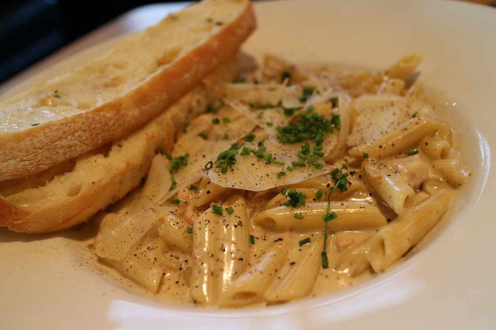

Alfredo

Description
A classic alfredo requires three elements: Chicken, Noodles, and Sauce. This recipe explains how to make a simple cheesey alfredo sauce.
Ingredients
- 3 Tbsp. unsalted butter
- 1 clove garlic
- 2 cups heavy cream
- 1/2 cup grated Parmesean cheese
- 1 tsp. salt
Instructions
- Melt butter in medium saucepan
- Add in garlic and cook for two minutes over medium heat
- Drop to a simmer and stir in cream
- Cook for 10 minutes or until sauce thickens
- Remove from heat
- Slowly add in cheese while whisking
- Whisk in salt to finish
Home